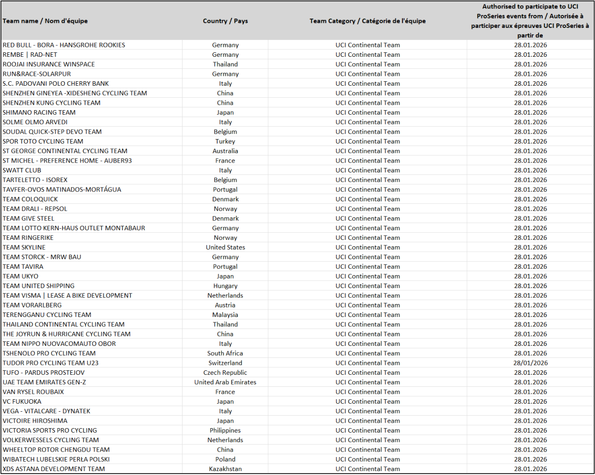

Participation Equipes Continentales UCI – Epreuves UCI ProSeries | Saison 2026
UCI Continental Teams participation – UCI ProSeries events | 2026 season
2.1.005
[…] Pour prendre le départ d’une épreuve UCI ProSeries, les équipes continentales UCI et les équipes professionnelles cyclo-cross UCI doivent contribuer au programme de lutte contre le dopage lié aux épreuves de l’UCI ProSeries tel que défini dans les obligations financières publiées par l’UCI ; les équipes concernées figureront sur une liste publiée sur le site Internet de l’UCI. […].
(texte modifié aux 1.01.99; 1.01.05; 1.01.06; 1.10.06; 25.09.07; 1.01.08; 1.01.09; 1.07.09; 1.10.09; 1.10.10; 1.07.11; 1.07.12; 1.10.13 ; 1.01.15 ; 1.01.16 ; 12.01.17 ; 1.02.17 ; 1.01.18 ; 23.10.19 ; 1.01.20 ; 9.11.20 ; 1.1.24 ; 1.01.25 ; 1.01.26).
Veuillez trouver ci-après les Equipes Continentales UCI et équipes professionnelles cyclo-cross UCI ayant rempli les critères afin de participer à au moins une épreuve UCI ProSeries pour la saison 2026 ainsi que la date à partir de laquelle chaque équipe peut participer à une épreuve UCI ProSeries.
2.1.005
[…] In order to compete in a UCI ProSeries event, UCI Continental Teams and UCI cyclo-cross professional teams must contribute to the programme for the fight against doping related to UCI ProSeries events as provided in the Financial Obligations published on the UCI website; the teams concerned will be included in a list published on the UCI website. […].
(text modified on 1.01.99; 1.01.05; 1.01.06; 1.10.06; 25.09.07; 1.01.08; 1.1.09; 1.07.09; 1.10.09; 1.10.10; 1.07.11; 1.07.12; 1.10.13; 1.01.14; 1.01.15; 1.01.16; 12.01.17; 1.02.17; 1.01.18; 23.10.19; 1.01.20, 9.11.20; 1.1.24; 1.01.25; 1.01.26).
The UCI Continental Teams and UCI cyclo-cross professional teams having fulfilled the criteria to participate to at least one UCI ProSeries event during the 2026 season as well as the date from which each team can participate to a UCI ProSeries event are following.
Page 1 / 3
Union Cycliste Internationale 17 juin 2026

| Authorised to participate to UCI |
|||
|---|---|---|---|
| Team name / Nom d'équipe | Country / Pays | Team Category / Catégorie de l'équipe | ProSeries events from / Autorisée à |
| participer aux épreuves UCI ProSeries à partir de |
|||
| 7ELEVEN CLIQQROADBIKE PHILIPPINES |
Philippines |
UCI Continental Team |
28.01.2026 |
| AARCO | Belgium | UCI Continental Team |
28.01.2026 |
| AISAN RACING TEAM ALPECIN-PREMIER TECH DEVELOPMENT TEAM |
Japan Belgium |
UCI Continental Team UCI Continental Team |
28.01.2026 28012026 |
ANICOLOR/CAMPICARN |
Ptl | UCI Ctitl T |
.. 28012026 |
| APS PRO CYCLING BY TEAM CADENCE CYCLERY | oruga United States |
onnena eam UCI Continental Team |
.. 28.01.2026 |
| ASTEMO UTSUNOMIYA BLITZEN ATT INVESTMENTS |
Japan Ch Rbli |
UCI Continental Team UCI Ctitl T |
28.01.2026 28012026 |
AVILUDO - LOULETANO - LOULÉ |
zec epuc Portugal |
onnena eam UCI Continental Team |
.. 28.01.2026 |
| AZERION/VILLA VALKENBURG | Netherlands | UCI Continental Team | 28.01.2026 |
| BAHRAIN VICTORIOUS DEVELOPMENT TEAM BALOISE VERZEKERINGEN HET POETSBUREAU LIONS |
Bahrain Bli |
UCI Continental Team UCI Ctitl T |
28.01.2026 28012026 |
| - BEAT CC P/B SAXO |
egum Netherlands |
onnena eam UCI Continental Team |
.. 28.01.2026 |
| BELTRAMI TSA TRE COLLI BENOTTI BERTHOLD |
Italy German |
UCI Continental Team UCI Continental Team |
28.01.2026 28012026 |
BHS-PL BETON BORNHOLM |
y Denmark |
UCI Continental Team |
.. 28.01.2026 |
| BIESSE - CARRERA - PREMAC | Italy | UCI Continental Team | 28.01.2026 |
| BIKE AID BODYWRAP LTWOO CYCLING TEAM |
Germany Chi |
UCI Continental Team UCI Ctitl T |
28.01.2026 28012026 |
CAMP CYCING TEAM CAMPANA IMBALLAGGI-MORBIATO-TRENTINO |
na China Italy |
onnena eam UCI Continental Team UCI Continental Team |
.. 28.01.2026 28.01.2026 |
| CCACHE X BODYWRAP |
Australia |
UCI Continental Team |
28.01.2026 |
| CHINA ANTA - MENTECH CYCLING TEAM CIC PRO CYCLING ACADEMY |
China France |
UCI Continental Team UCI Continental Team |
28.01.2026 28.01.2026 |
| COLOR CODE-ALU CENTER COMPETITIVE EDGE RACING |
Belgium id S |
UCI Continental Team CI Cil T |
28.01.2026 28012026 |
CREDIBOM/LA ALUMÍNIOS/MARCOS CAR |
Unte tates Portugal |
U ontnenta eam UCI Continental Team |
.. 28.01.2026 |
| DECATHLON CMA CGM DEVELOPMENT TEAM | France | UCI Continental Team | 28.01.2026 |
| DEVELOPMENT TEAM PICNIC POSTNL | Netherlands | UCI Continental Team | 28012026 |
EF EDUCATION - AEVOLO |
United States | UCI Continental Team |
.. 28.01.2026 |
| EFAPEL CYCLING | Portugal | UCI Continental Team | 28.01.2026 |
| EUROCYCLINGTRIPS - CCN |
Guam l |
UCI Continental Team l |
28.01.2026 |
| FACTOR RACING FEIRA DOS SOFÁS - BOAVISTA |
Sovenia Portugal |
UCI Continenta Team UCI Continental Team |
28.01.2026 28.01.2026 |
| FEIRENSE - BEECELER FNIX-SCOM-HENGXIANG CYCLING TEAM |
Portugal China |
UCI Continental Team UCI Continental Team |
28.01.2026 28012026 |
GENERAL STORE - ESSEGIBI - F.LLI CURIA |
Italy | UCI Continental Team |
.. 28.01.2026 |
| GI GROUP HOLDING - SIMOLDES - UDO GIANT CYCLING TEAM |
Portugal China |
UCI Continental Team UCI Continental Team |
28.01.2026 28012026 |
GRAGNANO SPORTING CLUB |
Italy |
UCI Continental Team |
.. 28.01.2026 |
| HAGENS BERMAN JAYCO HUANSHENG-VONOA-TAISHAN SPORT TEAM |
Australia China |
UCI Continental Team UCI Continental Team |
28.01.2026 28.01.2026 |
| INEOS GRENADIERS RACING ACADEMY |
Great Britain |
UCI Continental Team |
28.01.2026 |
| ISTANBUL TEAM | Turkey | UCI Continental Team | 28.01.2026 |
| JAKARTA PRO CYCLING TEAM | Indonesia | UCI Continental Team | 28.01.2026 |
| KASPER CRYPTO4ME | Czech Republic | UCI Continental Team | 28.01.2026 |
KINAN RACING TEAM |
J |
UCI Cil T |
28012026 |
KOLESARSKI KLUB NOVO MESTO |
apan Slovenia |
ontnenta eam UCI Continental Team |
.. 28.01.2026 |
| KONYA BÜYÜKŞEHİR BELEDİYE SPOR | Turkey | UCI Continental Team | 28.01.2026 |
| KSPO | South Korea | UCI Continental Team | 28012026 |
| L39ION OF LOS ANGELES | United States |
UCI Continental Team |
.. 28.01.2026 |
| LI NING STAR | China | UCI Continental Team | 28.01.2026 |
| LIDL-TREK FUTURE RACING | Germany | UCI Continental Team | 28.01.2026 |
LILLEHAMMER CK CONTINENTAL TEAM |
N | UCI Cil T |
28012026 |
LOTTO - GROUPE WANTY |
orway Belgium |
ontnenta eam UCI Continental Team |
.. 28.01.2026 |
| LUCKY SPORT CYCLING TEAM MADAR PRO CYCLING TEAM |
Sweden Aleria |
UCI Continental Team UCI Continental Team |
28.01.2026 28012026 |
MALAYSIA PRO CYCLING |
g Malaysia |
UCI Continental Team |
.. 28.01.2026 |
| MBB CONTINENTAL CYCLING TEAM MERIDIAN RACING P/B DE LA UZ |
Turkey United States |
UCI Continental Team UCI Continental Team |
28.01.2026 28012026 |
METEC - SOLARWATT P/B MANTEL |
Netherlands |
UCI Continental Team |
.. 28012026 |
MG.K VIS COSTRUZIONI E AMBIENTE |
Italy | UCI Continental Team |
.. 28.01.2026 |
| MOVISTAR TEAM ACADEMY NICE METROPOLE COTE D'AZUR |
Spain France |
UCI Continental Team UCI Continental Team |
28.01.2026 28012026 |
NSN DEVELOPMENT TEAM |
Switzerland | UCI Continental Team |
.. 28.01.2026 |
| NUSANTARA CYCLING TEAM OBIDOS CYCLING TEAM |
Indonesia Portugal |
UCI Continental Team UCI Continental Team |
28.01.2026 28.01.2026 |
PAUWELS SAUZEN - ALTEZ INDUSTRIEBOUW CYCLING TEAM |
Belgium |
UCI Cyclo-Cross Pro Team |
28.01.2026 |
| PETROLIKE POGI TEAM GUSTO LJUBLJANA |
Mexico Slovenia |
UCI Continental Team UCI Continental Team |
28.01.2026 28.01.2026 |
| PROJECT ECHELON RACING |
United States |
UCI Continental Team |
28.01.2026 |
| QINGHAI TIANYOUDE HOTEL CYCLING TEAM QUICK PRO TEAM |
China Estonia |
UCI Continental Team UCI Continental Team |
28.01.2026 28.01.2026 |
Page 2 / 3
Union Cycliste Internationale 17 juin 2026


Page 3 / 3
Union Cycliste Internationale 17 juin 2026